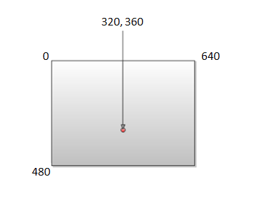
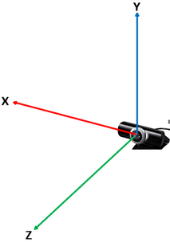

All data that refers to locations (of joints, hand extremities, center-of-mass, etc.) is expressed in the point coordinates.
The hand module represents position data in two types of coordinate systems:
| • | Image coordinates – a 2-dimensional system in pixels. |
| • | World coordinates – a 3-dimensional system in meters. |
You can retrieve both types of position data for all entities that have positions. For example, the JointData structure contains both positionImage and positionWorld properties.
Image Coordinates
This is a 2D coordinate system, as illustrated in Figure 31, in which the origin is in the top left corner of the image, and each (X,Y) pair represents the pixel in column X and row Y of the image.

Figure 31: Image Coordinates
 Different sensors or sensor configurations may result in different image dimensions.
Different sensors or sensor configurations may result in different image dimensions.
World Coordinates
This is a 3D left-handed coordinate system, as illustrated in Figure 32, whose origin is located at the center of the sensor’s physical 3D position. Each (x,y,z) triplet represents a point in the real world that is x meters to the right of the sensor, y meters above the sensor, and z meters away from the sensor.

Figure 32: World Coordinates